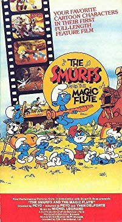
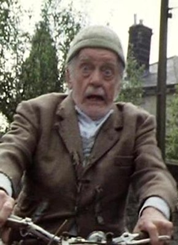

#9679 Die Schlümpfe und die Zauberflöte
 
 IMDB-Wertung: 6.1 / 10
IMDB-Wertung: 6.1 / 10  Metascore: 0
Metascore: 0 
A villain named McCreep steals the Smurfs' magic flute, an instrument that makes people dance wildly, and uses it to rob them. The Smurf King sends out Peewit to track down the thief and retrieve the flute. Now Johan and Pirlouit must get it back at all costs, so they head to the magical kingdom of Smurfs to ask for their help.
Jahr: 1976
Dauer: 70 Minuten
FSK:
Land: Frankreich Studio: Sony Pictures Home EntertainmentTonspuren:
Untertitel:
Auflösung: SD (576x432) Größe: 698 MB
Genre: Musik, Komödie, Fantasy, Animation/Trick, Familie, Musical
Regisseur: Peyo
Drehbuch: Peyo, Yvan Delporte, Peyo, Peyo
Soundtrack: Michel Legrand
Darsteller:
- Henri Crémieux als Homnibus
 Jacques Dynam als Mortaille
Jacques Dynam als Mortaille- Ginette Garcin als Dame Barde
 Jacques Marin als Schtroumpf-Fête
Jacques Marin als Schtroumpf-Fête Michel Modo als Pirlouit
Michel Modo als Pirlouit Ed Devereaux als
Ed Devereaux als -  Bill Owen als
- Harry Dickman als
 Cam Clarke als Peewit / Johan
Cam Clarke als Peewit / Johan Mike Reynolds als Papa Smurf / Matthew McCreep
Mike Reynolds als Papa Smurf / Matthew McCreep- Dudley Knight als
 Michael Sorich als Hefty Smurf
Michael Sorich als Hefty Smurf Robert Axelrod als Brainy Smurf
Robert Axelrod als Brainy Smurf- Georges Atlas als Sénéchal
- Jacques Balutin als Le buveur
- Angelo Bardi als Le marchand
- Jacques Ciron als Le visiteur
- William Coryn als Johan
- Roger Crouzet als Schtroumpf #2
- Michel Elias als Le grand Schtroumpf
- Henri Labussière als Le pêcheur
- Albert Médina als Torchesac
- Georges Pradez als Le roi
- Serge Nadaud als Le garde / Le sourd / Olivier / L'argentier
- Jacques Ruisseau als Schtroumpf #1
- Richard Pescud als
- Vernon Morris als
- Stuart Lock als
- Yael Stern-O'Dwyer als
- Anna MacLeod als
- Richard Ashley als
- Paul Felber als
- Michael Fields als
- Kalman Glass als
- Grant Gottschall als
- Patty Foley als
- Theodore Lehmann als
- Bill Capizzi als
- Star X. Phifer als
- Ron Gans als Earl Flatbroke
- John Rust als
- Richard Miller als
- David Page als
- Durga McBroom als
Datei: X:\Kinder Collections\Schlümpfe\Schlümpfe und die Zauberflöte, Die (1976, FSK, 576x432).avi seit 03.10.2018
Festplatte: Kinder-Filme+Trick
 Es gibt insgesamt 9 Filme in der Gruppe 'Kinder Collections\Schlümpfe'
Es gibt insgesamt 9 Filme in der Gruppe 'Kinder Collections\Schlümpfe'